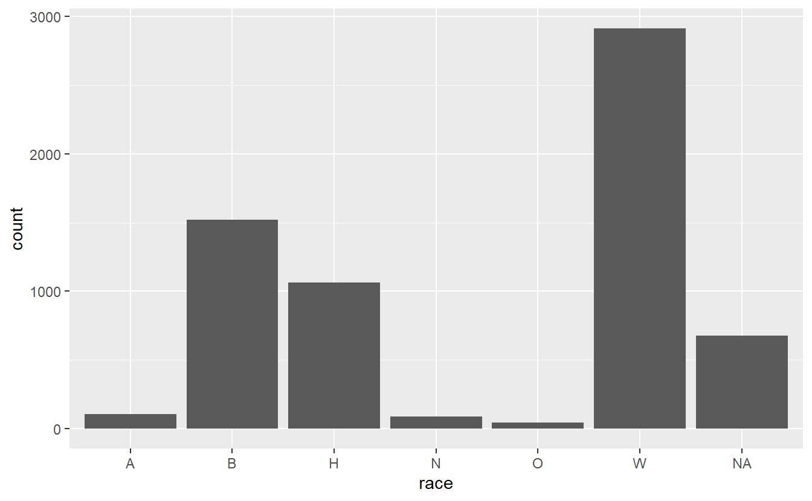
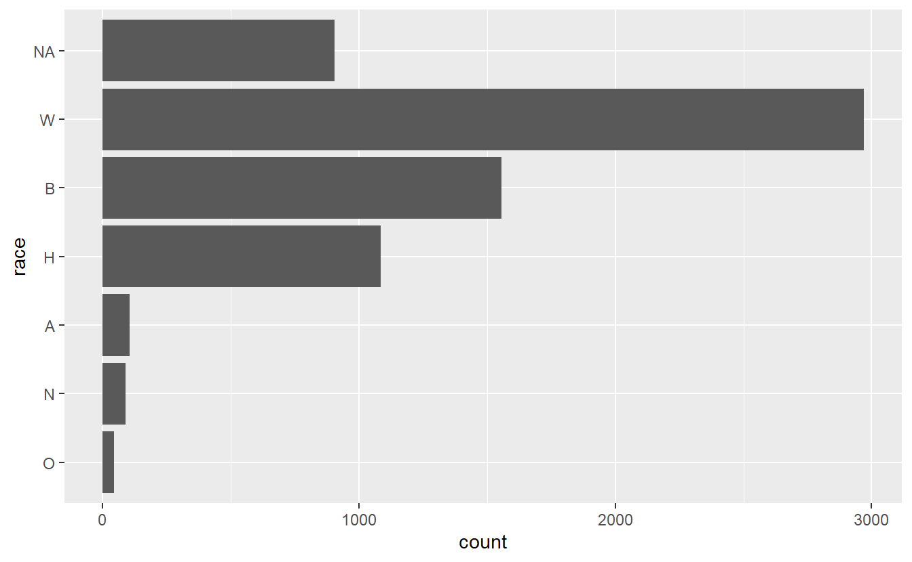

7 More graphing with ggplot
In this lesson we will continue to explore graphing using ggplot(). While the Philadelphia Police website does have a number of variables available in a table on the site for shootings since 2013, since we did not scrape them initially we’ll turn to a new data set. The data we will use is a database of officer-involved shootings that result in a death in the United States since January 1st, 2015. This data has been compiled and released by the Washington Post so it will be a useful exercise in exploring data from non-government sources. This data is useful for our purposes as it has a number of variables related to the person who was shot, allowing us to practice making many types of graphs.
To explore the data on their website, see here. To examine their methodology, see here.
The data initially comes as a .csv file so we’ll use the read_csv() function from the readr package.
shootings <- read_csv("data/fatal-police-shootings-data.csv")
#> Parsed with column specification:
#> cols(
#> id = col_double(),
#> name = col_character(),
#> date = col_date(format = ""),
#> manner_of_death = col_character(),
#> armed = col_character(),
#> age = col_double(),
#> gender = col_character(),
#> race = col_character(),
#> city = col_character(),
#> state = col_character(),
#> signs_of_mental_illness = col_logical(),
#> threat_level = col_character(),
#> flee = col_character(),
#> body_camera = col_logical()
#> )Since read_csv() reads files into a tibble object, we’ll turn it into a data.frame just for simplicity.
Now that we have the data read in, let’s look at it.
The data has 14 variables and covers over 4,000 shootings. Let’s check out some of the variables, first using head() then using summary() and table().
head(shootings)
#> id name date manner_of_death armed age gender race
#> 1 3 Tim Elliot 2015-01-02 shot gun 53 M A
#> 2 4 Lewis Lee Lembke 2015-01-02 shot gun 47 M W
#> 3 5 John Paul Quintero 2015-01-03 shot and Tasered unarmed 23 M H
#> 4 8 Matthew Hoffman 2015-01-04 shot toy weapon 32 M W
#> 5 9 Michael Rodriguez 2015-01-04 shot nail gun 39 M H
#> 6 11 Kenneth Joe Brown 2015-01-04 shot gun 18 M W
#> city state signs_of_mental_illness threat_level flee
#> 1 Shelton WA TRUE attack Not fleeing
#> 2 Aloha OR FALSE attack Not fleeing
#> 3 Wichita KS FALSE other Not fleeing
#> 4 San Francisco CA TRUE attack Not fleeing
#> 5 Evans CO FALSE attack Not fleeing
#> 6 Guthrie OK FALSE attack Not fleeing
#> body_camera
#> 1 FALSE
#> 2 FALSE
#> 3 FALSE
#> 4 FALSE
#> 5 FALSE
#> 6 FALSEEach row is a single shooting and it includes variables such as the victim’s name, the date of the shooting, demographic information about that person, the shooting city and state, and some information about the incident. It is clear from these first 6 rows that most variables are categorical so we can’t use summary() on them. Let’s use summary() on the date and age columns and then use table() for the rest.
summary(shootings$date)
#> Min. 1st Qu. Median Mean 3rd Qu. Max.
#> "2015-01-02" "2016-02-07" "2017-03-16" "2017-03-18" "2018-04-11" "2019-06-25"summary(shootings$age)
#> Min. 1st Qu. Median Mean 3rd Qu. Max. NA's
#> 6.00 27.00 35.00 36.84 45.00 91.00 182From this we can see that the data is from January 1st through the middle of 2019 (The Washington Post is continuously updating their data but I downloaded it on June 27th, 2019 which is why June 2019 is the end of our data). From the age column we can see that the average age is about 35 with most people around that range. However, the youngest person is 6 years old while the oldest is 91. Additionally, 182 rows have missing values for this variable.
Now we can use table() to see how often each value appears in each variable. We don’t want to do this for city or name as there would be too many values, but it will work for the other columns. Let’s start with manner_of_death.
To turn these counts into percentages we can divide the results by the number of rows in our data and multiply by 100.
table(shootings$manner_of_death) / nrow(shootings) * 100
#>
#> shot shot and Tasered
#> 94.852437 5.147563Now it is clear to see that in 95% of shootings, officers used a gun and in 5% of shootings they also used a Taser. As this is data on officer shooting deaths, this is unsurprising. Let’s take a look at whether the victim was armed.
table(shootings$armed) / nrow(shootings) * 100
#>
#> air conditioner ax
#> 0.02287806 0.48043926
#> barstool baseball bat
#> 0.02287806 0.27453672
#> baseball bat and bottle baseball bat and fireplace poker
#> 0.02287806 0.02287806
#> baton bayonet
#> 0.09151224 0.02287806
#> BB gun bean-bag gun
#> 0.06863418 0.02287806
#> beer bottle blunt object
#> 0.06863418 0.11439030
#> bow and arrow box cutter
#> 0.02287806 0.22878060
#> brick carjack
#> 0.04575612 0.02287806
#> chain chain saw
#> 0.04575612 0.04575612
#> chainsaw chair
#> 0.02287806 0.04575612
#> claimed to be armed contractor's level
#> 0.02287806 0.02287806
#> cordless drill crossbow
#> 0.02287806 0.20590254
#> crowbar fireworks
#> 0.06863418 0.02287806
#> flagpole flashlight
#> 0.02287806 0.02287806
#> garden tool glass shard
#> 0.02287806 0.06863418
#> gun gun and car
#> 55.43353924 0.11439030
#> gun and knife gun and sword
#> 0.34317090 0.02287806
#> gun and vehicle guns and explosives
#> 0.04575612 0.06863418
#> hammer hand torch
#> 0.22878060 0.02287806
#> hatchet hatchet and gun
#> 0.18302448 0.04575612
#> incendiary device knife
#> 0.04575612 14.96225120
#> lawn mower blade machete
#> 0.04575612 0.86936628
#> machete and gun meat cleaver
#> 0.02287806 0.06863418
#> metal hand tool metal object
#> 0.02287806 0.09151224
#> metal pipe metal pole
#> 0.25165866 0.04575612
#> metal rake metal stick
#> 0.02287806 0.06863418
#> motorcycle nail gun
#> 0.02287806 0.02287806
#> oar pellet gun
#> 0.02287806 0.02287806
#> pen pepper spray
#> 0.02287806 0.02287806
#> pick-axe piece of wood
#> 0.06863418 0.06863418
#> pipe pitchfork
#> 0.13726836 0.04575612
#> pole pole and knife
#> 0.04575612 0.04575612
#> rock samurai sword
#> 0.09151224 0.02287806
#> scissors screwdriver
#> 0.06863418 0.18302448
#> sharp object shovel
#> 0.11439030 0.06863418
#> spear stapler
#> 0.02287806 0.02287806
#> straight edge razor sword
#> 0.06863418 0.34317090
#> Taser tire iron
#> 0.41180508 0.02287806
#> toy weapon unarmed
#> 3.54609929 6.36010066
#> undetermined unknown weapon
#> 4.30107527 1.25829330
#> vehicle vehicle and gun
#> 1.57858614 0.02287806
#> walking stick wrench
#> 0.02287806 0.02287806This is fairly hard to interpret as it is sorted alphabetically when we’d prefer it to be sorted by most common weapon. It also doesn’t round the percents. Let’s solve these two issues using sort() and round(). We could just wrap our initial code inside each of these functions but to avoid making too complicated code, we save the results in a temp object and incrementally use sort() and round() on that. We’ll round to two decimal places by setting the parameter digits to 2.
temp <- table(shootings$armed) / nrow(shootings) * 100
temp <- sort(temp)
temp <- round(temp, digits = 2)
temp
#>
#> air conditioner barstool
#> 0.02 0.02
#> baseball bat and bottle baseball bat and fireplace poker
#> 0.02 0.02
#> bayonet bean-bag gun
#> 0.02 0.02
#> bow and arrow carjack
#> 0.02 0.02
#> chainsaw claimed to be armed
#> 0.02 0.02
#> contractor's level cordless drill
#> 0.02 0.02
#> fireworks flagpole
#> 0.02 0.02
#> flashlight garden tool
#> 0.02 0.02
#> gun and sword hand torch
#> 0.02 0.02
#> machete and gun metal hand tool
#> 0.02 0.02
#> metal rake motorcycle
#> 0.02 0.02
#> nail gun oar
#> 0.02 0.02
#> pellet gun pen
#> 0.02 0.02
#> pepper spray samurai sword
#> 0.02 0.02
#> spear stapler
#> 0.02 0.02
#> tire iron vehicle and gun
#> 0.02 0.02
#> walking stick wrench
#> 0.02 0.02
#> brick chain
#> 0.05 0.05
#> chain saw chair
#> 0.05 0.05
#> gun and vehicle hatchet and gun
#> 0.05 0.05
#> incendiary device lawn mower blade
#> 0.05 0.05
#> metal pole pitchfork
#> 0.05 0.05
#> pole pole and knife
#> 0.05 0.05
#> BB gun beer bottle
#> 0.07 0.07
#> crowbar glass shard
#> 0.07 0.07
#> guns and explosives meat cleaver
#> 0.07 0.07
#> metal stick pick-axe
#> 0.07 0.07
#> piece of wood scissors
#> 0.07 0.07
#> shovel straight edge razor
#> 0.07 0.07
#> baton metal object
#> 0.09 0.09
#> rock blunt object
#> 0.09 0.11
#> gun and car sharp object
#> 0.11 0.11
#> pipe hatchet
#> 0.14 0.18
#> screwdriver crossbow
#> 0.18 0.21
#> box cutter hammer
#> 0.23 0.23
#> metal pipe baseball bat
#> 0.25 0.27
#> gun and knife sword
#> 0.34 0.34
#> Taser ax
#> 0.41 0.48
#> machete unknown weapon
#> 0.87 1.26
#> vehicle toy weapon
#> 1.58 3.55
#> undetermined unarmed
#> 4.30 6.36
#> knife gun
#> 14.96 55.43Now it is a little easier to interpret. In over half of the cases the victim was carrying a gun. 15% of the time they had a knife. And 6% of the time they were unarmed. In 4% of cases there is no data on any weapon. That leaves about 20% of cases where one of the many rare weapons were used, including some that overlap with one of the more common categories.
Think about how you’d graph this data. There are 85 unique values in this column though only 7 of them are common enough to appear more than 1% of the time. Should we graph all of them? No, that would overwhelm any graph. For a useful graph we would need to combine many of these into a single category - possibly called “other weapons.” And how do we deal with values where they could meet multiple larger categories? There is not always a clear answer for these types of questions. It depends on what data you’re interested in, the goal of the graph, the target audience, and personal preference.
Let’s keep exploring the data by looking at gender and race.
Nearly all of the shootings are of a man. Given that we saw most shootings involved a person with a weapon and that most violent crimes are committed by men, this shouldn’t be too surprising.
temp <- table(shootings$race) / nrow(shootings) * 100
temp <- sort(temp)
temp <- round(temp, digits = 2)
temp
#>
#> O N A H B W
#> 0.87 1.46 1.62 16.45 22.90 44.89White people are the most likely to be killed by police followed by Black people and Hispanic people.
We can do a simple cross-tab to see if there the relationship between gender and race.
table(shootings$gender, shootings$race)
#>
#> A B H N O W
#> F 3 42 21 5 3 107
#> M 68 959 697 59 35 1853One annoying thing with these two variables is that it doesn’t spell out the name. Instead of “Female”, for example, it has “F”. For our graphs we want to spell out the words so it is clear to viewers. We’ll fix this issue, and the issue of having many weapon categories, as we graph each variable.
We’ve spent some time looking at the data so now we’re ready to make the graphs. We need to load the ggplot2 package.
7.1 Density plot
As a reminder, the benefit of using ggplot() is we can start with a simple plot and build our way up to more complicated graphs.
ggplot(shootings, aes(x = age)) +
geom_density()
#> Warning: Removed 182 rows containing non-finite values (stat_density).
7.2 Histogram
ggplot(shootings, aes(x = age)) +
geom_histogram()
#> `stat_bin()` using `bins = 30`. Pick better value with `binwidth`.
#> Warning: Removed 182 rows containing non-finite values (stat_bin).
7.3 Bar graph

race_order <- names(sort(table(shootings$race), decreasing = TRUE))
ggplot(shootings, aes(x = race)) +
geom_bar() +
scale_x_discrete(limits = race_order)
#> Warning: Removed 516 rows containing non-finite values (stat_count).
For bar graphs it is often useful to flip the graph so each value is a row in the graph rather than a column. This also makes it much easier to read the value name.
race_order <- names(sort(table(shootings$race)))
ggplot(shootings, aes(x = race)) +
geom_bar(aes(y = (..count..)/sum(..count..))) +
coord_flip() +
scale_x_discrete(limits = race_order)
#> Warning: Removed 516 rows containing non-finite values (stat_count).
race_order <- names(sort(table(shootings$race)))
ggplot(shootings, aes(x = race)) +
geom_bar(aes(y = (..count..)/sum(..count..))) +
coord_flip() +
scale_x_discrete(limits = race_order) +
scale_y_continuous(labels = scales::percent)
#> Warning: Removed 516 rows containing non-finite values (stat_count).
We can reuse this code to make a similar graph for the gender variable.
race_order <- names(sort(table(shootings$gender)))
ggplot(shootings, aes(x = gender)) +
geom_bar(aes(y = (..count..)/sum(..count..))) +
coord_flip() +
scale_x_discrete(limits = race_order) +
scale_y_continuous(labels = scales::percent)
#> Warning: Removed 5 rows containing non-finite values (stat_count).
7.4 Time Series
library(lubridate)
#>
#> Attaching package: 'lubridate'
#> The following objects are masked from 'package:base':
#>
#> date, intersect, setdiff, unionshootings$dummy <- 1
shootings$month_year <- floor_date(shootings$date, unit = "month")
shootings$year <- year(shootings$date)


yearly_shootings <- aggregate(dummy ~ month_year, data = shootings[shootings$armed == "unarmed", ], FUN = sum)
ggplot(yearly_shootings, aes(x = month_year, y = dummy)) +
geom_line()